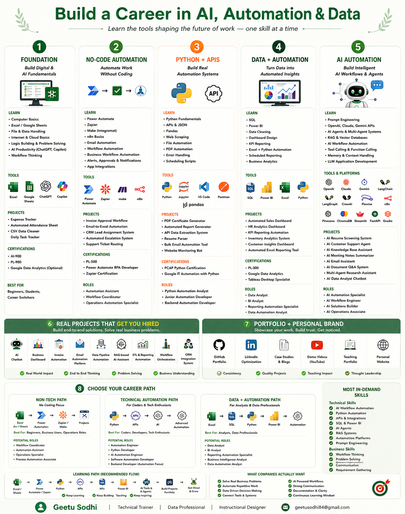
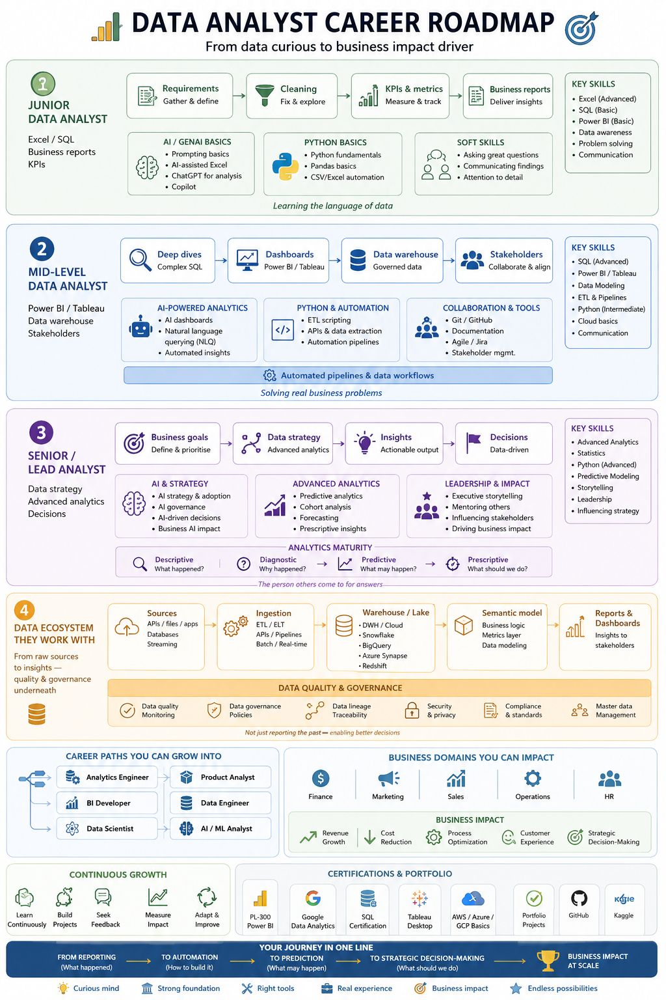
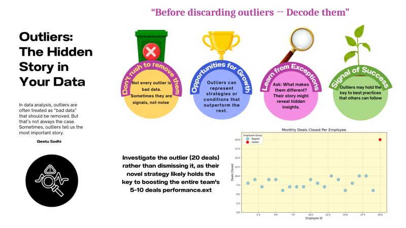
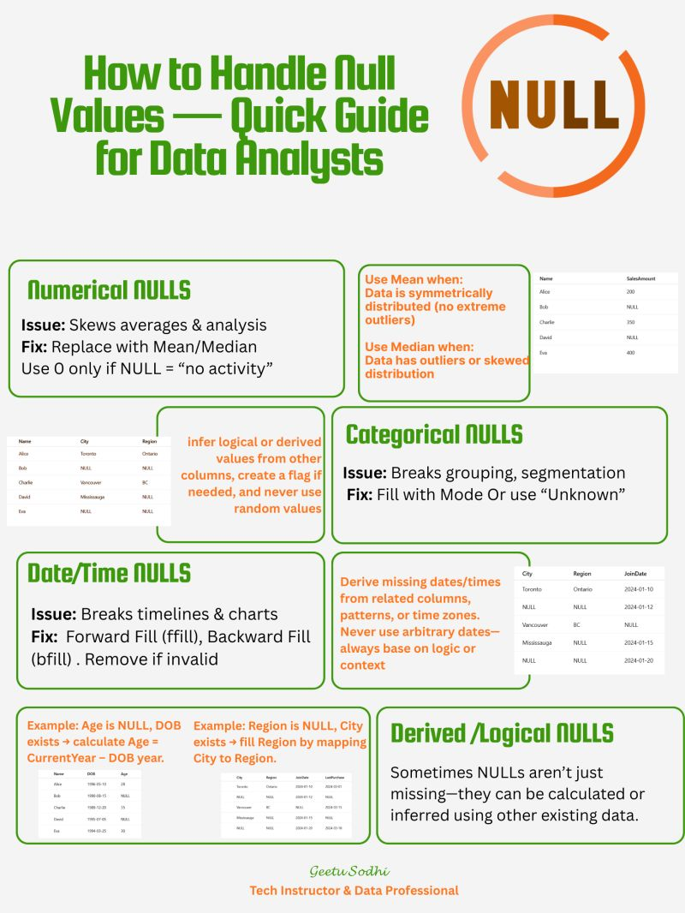

🎓 Interactive Python Training Module
Articulate 360–based Python lesson designed using LXD principles.
🎓 ADDIE Case Study
Skills-Based Job Search & Mock Interview Program using ADDIE model.
🎓 Data Visualizaton Quick Guide
Skills- A concise tutorial that helps you understand different data visualization types and select the most effective chart based on the data pattern and business scenario. It focuses on practical decision-making for dashboards, reports, and analytics use cases
eLearning Storyboard Sample
Instructional Design Artifact: A sample storyboard demonstrating the planning and design process behind an engaging learning experience. It outlines learning objectives, content flow, instructional strategies, learner activities, visual recommendations, and assessment approaches. The storyboard follows instructional design principles including ADDIE, Bloom’s Taxonomy, and learner-centered design.
📘 Full Python Curriculum
Beginner to advanced structured curriculum.
📊 Data Analytics Curriculum
Industry-aligned curriculum using ADDIE + backward design.
Visual Bytes of Knowledge
Microlearning & Instructional Design Showcase.





